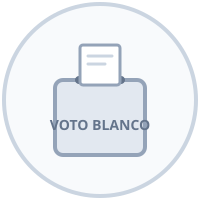
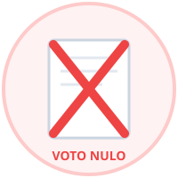

Identificación del Elector
Ingresa tu Código de Estudiante o DNI para votar
Pide asistencia al presidente de mesa si no recuerdas tu código.
Voto 100% Secreto, Electrónico y Auditable
¡Hola, Estudiante!
4to Grado de Secundaria - Sección B
En la siguiente pantalla verás la Cédula de Votación. Elige la lista de tu preferencia o las opciones de voto en blanco/nulo. Tu voto se enviará de forma anónima.
Cédula Oficial de Sufragio
Elige tu lista para el Municipio Escolar
Toca o haz clic sobre la lista de tu preferencia para seleccionarla.
Estudiante
Grado y Sección
Otras Opciones Democráticas

Voto en Blanco
Dejar la cédula sin preferencia de lista

Voto Nulo
Viciar el voto intencionalmente
¡Gracias por tu Voto!
Tu participación fortalece nuestra democracia escolar. Tu voto ha sido registrado de manera secreta y anónima en el servidor principal.
Reinicio automático
Reiniciando en
5
segundos...